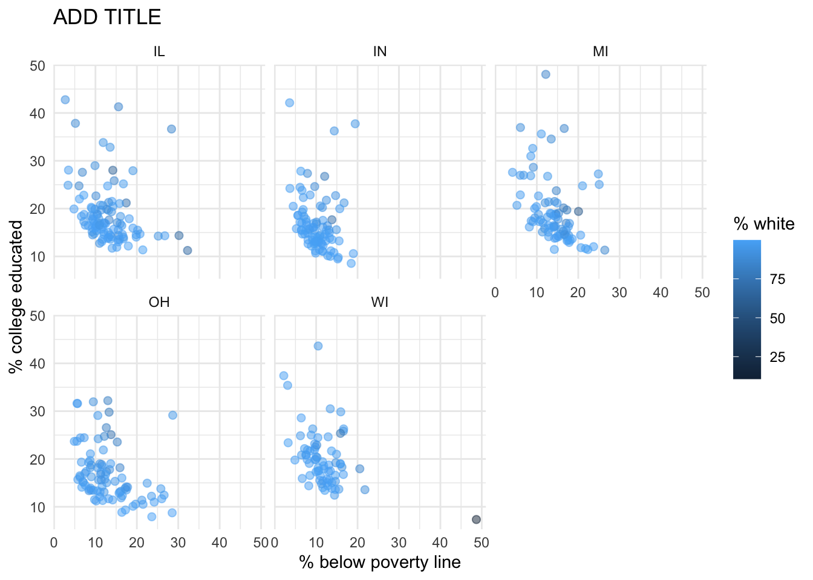

library(tidyverse)Lab 1 - Hello R!
Lab
This lab will introduce you to the course computing workflow. The main goal is to reinforce our demo of R and RStudio, which we will be using throughout the course both to learn the statistical concepts discussed in the course and to analyze real data and come to informed conclusions.
Note
R is the name of the programming language itself and RStudio is a convenient interface, commonly referred to as an integrated development environment or an IDE, for short.
An additional goal is to reinforce Git and GitHub, the version control, web hosting, and collaboration systems that we will be using throughout the course.
Note
Git is a version control system (like “Track Changes” features from Microsoft Word but more powerful) and GitHub is the home for your Git-based projects on the internet (like DropBox but much better).
As the labs progress, you are encouraged to explore beyond what the labs dictate; a willingness to experiment will make you a much better programmer. Before we get to that stage, however, you need to build some basic fluency in R. Today we begin with the fundamental building blocks of R and RStudio: the interface, reading in data, and basic commands.
Warning
This lab assumes that you have already completed Lab 0. If you have not, please go back and do that first before proceeding.
Learning objectives
By the end of the lab, you will…
- Be familiar with the workflow using R, RStudio, Git, and GitHub
- Gain practice writing a reproducible report using Quarto
- Practice version control using Git and GitHub
- Be able to create data visualizations using
ggplot2
Getting started
Log in to RStudio
- Go to https://cmgr.oit.duke.edu/containers and login with your Duke NetID and Password.
- Click
STA198-199under My reservations to log into your container. You should now see the RStudio environment.
Clone the repo & start new RStudio project
Go to the course organization at github.com/sta199-s24 organization on GitHub. Click on the repo with the prefix lab-1. It contains the starter documents you need to complete the lab.
Click on the green CODE button, select Use SSH (this might already be selected by default, and if it is, you’ll see the text Clone with SSH). Click on the clipboard icon to copy the repo URL.
In RStudio, go to File ➛ New Project ➛Version Control ➛ Git.
Copy and paste the URL of your assignment repo into the dialog box Repository URL. Again, please make sure to have SSH highlighted under Clone when you copy the address.
Click Create Project, and the files from your GitHub repo will be displayed in the Files pane in RStudio.
Click lab-1.qmd to open the template Quarto file. This is where you will write up your code and narrative for the lab.
R and R Studio
Below are the components of the RStudio IDE.

Below are the components of a Quarto (.qmd) file.

YAML
The top portion of your R Markdown file (between the three dashed lines) is called YAML. It stands for “YAML Ain’t Markup Language”. It is a human friendly data representation for all programming languages. All you need to know is that this area is called the YAML (we will refer to it as such) and that it contains meta information about your document.
Important
Open the Quarto (.qmd) file in your project, change the author name to your name, and render the document. Examine the rendered document.
Committing changes
Now, go to the Git pane in your RStudio instance. This will be in the top right hand corner in a separate tab.
If you have made changes to your Quarto (.qmd) file, you should see it listed here. Click on it to select it in this list and then click on Diff. This shows you the difference between the last committed state of the document and its current state including changes. You should see deletions in red and additions in green.
If you’re happy with these changes, we’ll prepare the changes to be pushed to your remote repository. First, stage your changes by checking the appropriate box on the files you want to prepare. Next, write a meaningful commit message (for instance, “updated author name”) in the Commit message box. Finally, click Commit. Note that every commit needs to have a commit message associated with it.
You don’t have to commit after every change, as this would get quite tedious. You should commit states that are meaningful to you for inspection, comparison, or restoration.
In the first few assignments we will tell you exactly when to commit and in some cases, what commit message to use. As the semester progresses we will let you make these decisions.
Now let’s make sure all the changes went to GitHub. Go to your GitHub repo and refresh the page. You should see your commit message next to the updated files. If you see this, all your changes are on GitHub and you’re good to go!
Push changes
Now that you have made an update and committed this change, it’s time to push these changes to your repo on GitHub.
In order to push your changes to GitHub, you must have staged your commit to be pushed. click on Push.
Packages
In this lab we will work with the tidyverse package, which is a collection of packages for doing data analysis in a “tidy” way.
Render the document which loads this package with the library() function.
Note
The rendered document will include a message about which packages the tidyverse packages is loading along with it. It’s just R being informative, a message does not indicate anything is wrong (it’s not a warning or an error).
The tidyverse is a meta-package. When you load it you get nine packages loaded for you:
- dplyr: for data wrangling
- forcats: for dealing with factors
- ggplot2: for data visualization
- lubridate: for dealing with dates
- purrr: for iteration with functional programming
- readr: for reading and writing data
- stringr: for string manipulation
- tibble: for modern, tidy data frames
- tidyr: for data tidying and rectangling
The message that’s printed when you load the package tells you which versions of these packages are loaded as well as any conflicts they may have introduced, e.g., the filter() function from dplyr has now masked (overwritten) the filter() function available in base R (and that’s ok, we’ll use dplyr::filter() anyway).
You can now Render your template document and see the results.
Data
Let’s take a trip to the Midwest!
We will use the midwest data frame for this lab. It is part of the ggplot2 R package, so the midwest data set is automatically loaded when you load the tidyverse package.
The data contains demographic characteristics of counties in the Midwest region of the United States.
Because the data set is part of the ggplot2 package, you can read documentation for the data set, including variable definitions by typing ?midwest in the Console or searching for midwest in the Help pane.
Guidelines
As we’ve discussed in lecture, your plots should include an informative title, axes should be labeled, and careful consideration should be given to aesthetic choices.
In addition, the code should not exceed the 80 character limit, so that all the code can be read when you render to PDF. To help with this, you can add a vertical line at 80 characters by clicking “Tools” \(\rightarrow\) “Global Options” \(\rightarrow\) “Code” \(\rightarrow\) “Display”, then set “Margin Column” to 80, and click “Apply”.
Remember that continuing to develop a sound workflow for reproducible data analysis is important as you complete the lab and other assignments in this course. There will be periodic reminders in this assignment to remind you to render, commit, and push your changes to GitHub. You should have at least 3 commits with meaningful commit messages by the end of the assignment.
Exercises
Exercise 1
Visualize the distribution of population density of counties using first a histogram (with an appropriate binwidth) and then with a box plot. Make sure to set informative titles and axis labels for each of your plots. Then, using information as needed from these plots, describe the shape of the distribution of population density of counties and comment on any potential outliers, making sure you identify at least one county that is a clear outlier by name in your narrative. You can use the data viewer interactively to identify the outliers, you do not have to write code.
Note
For more details and code examples for each of these plots, see the relevant reference pages:
Render, commit, and push your changes to GitHub with the commit message “Added answer for Ex 1”.
Make sure to commit and push all changed files so that your Git pane is empty afterward.
Exercise 2
This exercise has two parts. Part (a) asks you to create a single plot and identify states with shapes and colors and part (b) asks you to create separate plots (small multiples) to identify states.
Create a scatterplot of the percentage of people with a college degree (
percollege) versus percentage below poverty (percbelowpoverty) where the color and shape of points are determined bystate. Then, describe what you observe in this plot, making sure to include similarities and differences in the patterns across states.Now, let’s examine the relationship between the same two variables, using a separate plot for each state. Label the axes and give the plot a title. Use
geom_smooth()with the argumentse = FALSEto add a smooth curve fit to the data. Which plot do you prefer - this plot or the plot in Ex 2? Briefly explain your choice.Notese = FALSEremoves the confidence bands around the line. These bands show the uncertainty around the smooth curve. We’ll discuss uncertainty around estimates later in the course and bring these bands back then.
Render, commit, and push your changes to GitHub with the commit message “Added answer for Ex 2”.
Make sure to commit and push all changed files so that your Git pane is empty afterward.
Exercise 3
Do some states have counties that tend to be geographically larger than others?
To explore this question, create side-by-side boxplots of area (area) of a county based on state (state). Describe what you observe from the plot. Which state has the single largest county? How do you know based on the plot?
Now is another good time to render, commit, and push your changes to GitHub with a meaningful commit message.
Once again, make sure to commit and push all changed files so that your Git pane is empty afterwards.
Exercise 4
Do some states have a higher percentage of their counties located in a metropolitan area?
Create a segmented bar chart with one bar per state and the bar filled with colors according to the value of metro – one color indicating Yes and the other color indicating No for whether a county is considered to a metro area. The y axis of the segmented barplot should range from 0 to 1, indicating proportions. Describe the distribution of metro across states based on this plot.
Hint
For this exercise, you should begin with the data wrangling pipeline below. We will learn more about data wrangling in the coming weeks, so this is a mini preview. This pipeline creates a new variable called metro based on the value of the existing variable called inmetro. If the value of inmetro is equal to 1 (inmetro == 1), it sets the value of metro to "Yes", and if not, it sets the value of metro to "No". The resulting data frame is assigned back to midwest, overwriting the existing midwest data frame with a version that includes the new metro variable.
midwest <- midwest |>
mutate(metro = if_else(inmetro == 1, "Yes", "No"))Now is another good time to render, commit, and push your changes to GitHub with a meaningful commit message.
And once again, make sure to commit and push all changed files so that your Git pane is empty afterwards. We keep repeating this because it’s important, and because we see students forget to do this. So take a moment to make sure you’re following along with the version control instructions.
Exercise 5
Recreate the plot below, and then give it a title. Finally, interpret the visualization, making sure you identify at least one county that is a clear outlier in Wisconsin (WI) by name in your narrative. You can use the data viewer interactively to identify them, you do not have to write code.

Hint
- The
ggplot2reference for themes will be helpful in determining the theme. - The
sizeof the points is 2. - The transparency (
alpha) of the points is 0.5. - You can put line breaks in labels with
\n.
Render, commit, and push your final changes to GitHub with a meaningful commit message.
Make sure to commit and push all changed files so that your Git pane is empty afterwards.
Submission
Once you are finished with the lab, you will your final PDF document to Gradescope.
Warning
Before you wrap up the assignment, make sure all documents are updated on your GitHub repo. We will be checking these to make sure you have been practicing how to commit and push changes.
You must turn in a PDF file to the Gradescope page by the submission deadline to be considered “on time”.
To submit your assignment:
- Go to http://www.gradescope.com and click Log in in the top right corner.
- Click School Credentials \(\rightarrow\) Duke NetID and log in using your NetID credentials.
- Click on your STA 199 course.
- Click on the assignment, and you’ll be prompted to submit it.
- Mark all the pages associated with exercise. All the pages of your lab should be associated with at least one question (i.e., should be “checked”).
Grading
Each exercise will be graded on the following scale:
| 4 | Response shows proficiency and addresses large majority of rubric items. |
| 3 | Response shows understanding and addresses majority of rubric items. |
| 2 | Response shows effort and misses majority of rubric items. |
| 1 | Response does not show sufficient effort or understanding and/or is largely incomplete. |
| 0 | No attempt. |